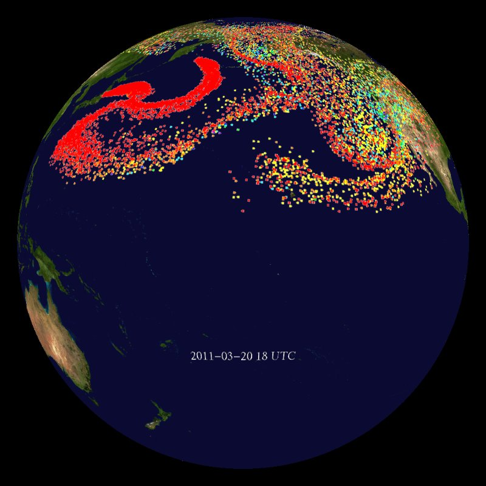
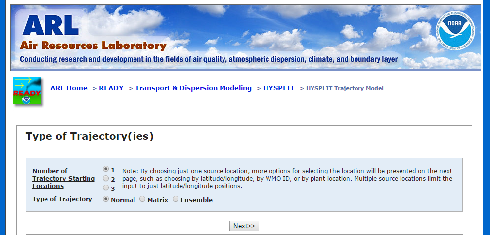
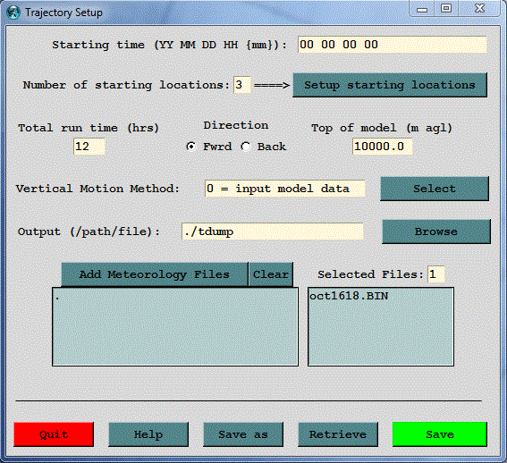
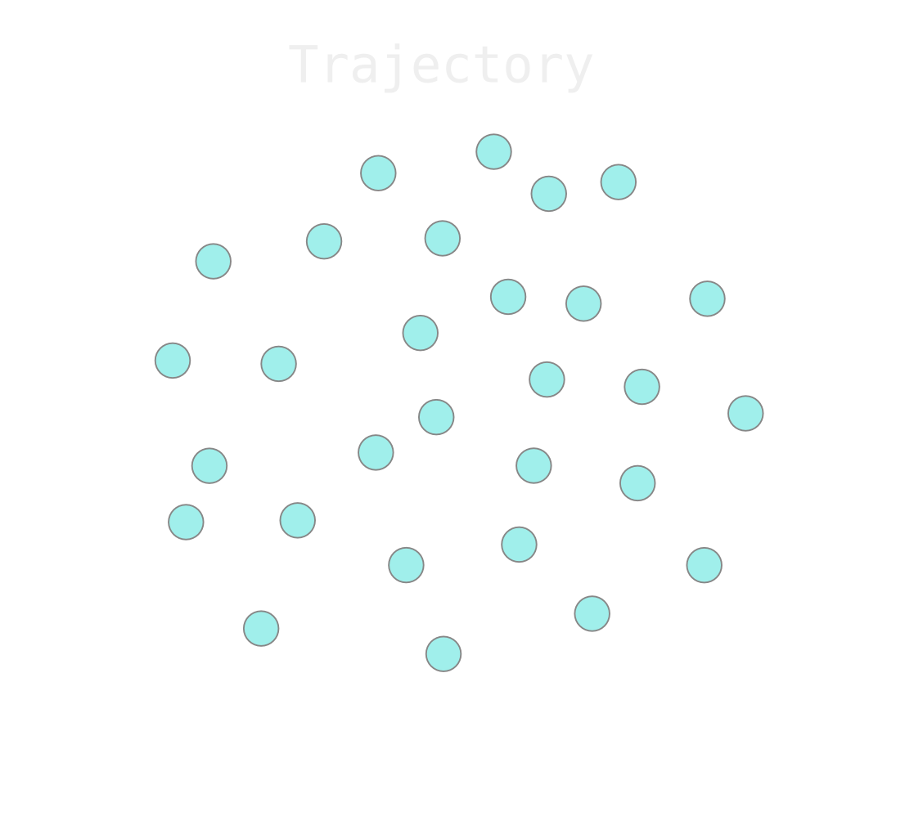
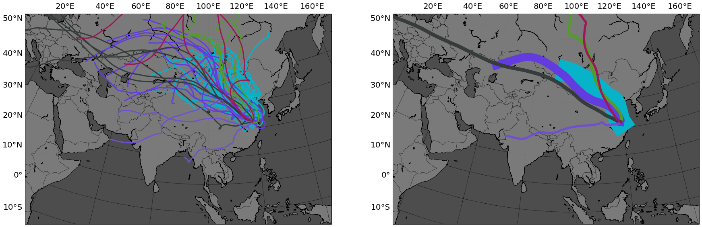

PySPLIT
a package for the generation, analysis, and visualization of HYSPLIT air parcel trajectories
Mellissa Cross / @mscross
HYSPLIT
NOAA ARL's HYbrid Single-Particle Lagrangian Integrated Transport model
Two primary simulations:
- Concentrations- puff or particle method
- Air parcel trajectories
What is an air parcel?
Applications
sos.noaa.gov
blogs.agu.org/wildwildscience/2011/03/15/radiation-from-coal-vs-nuclear-plants/
Feng et al. (2014), Figure 1
Breitenbach et al. (2009), Figure 5
Gustafsson et al. (2010), Figures 2 and 5
Acquisition
online READY system
download to PC or Mac
Workflow
- Generate manually
- Copy-paste into Excel
- Do calculations
- Plot
- Cross fingers
Total active time: 3 weeks
PySPLIT
Dependencies: NumPy, matplotlib, Basemap
- Class-based trajectory data management
- Bulk trajectory generation
- Attractive visualizations
- Efficient workflow
Architecture
Workflow
- Generate overnight
- Load
- Sort and analyze
- Plot
- Re-sort, analyze, plot again
Total active time: ...

Generate
import pysplit
pysplit.generate_trajectories(
'test_traj', r'C:/hysplit4/working', r'C:/trajectories/test', r'E:/meteorology',
[2006, 2007, 2008], [6, 7, 8], [2, 8, 14, 20], [500, 1500], (39.01, -114.22), -120,
meteo_type='gdas1', get_reverse=True, get_clippedtraj=True,
hysplit="C:\\hysplit4\\exec\\hyts_std")
For more about clipped trajectories and HYSPLIT clustering with PYSPLIT Cluster and ClusterGroup classes, see the Scipy Proceedings
Load
trajgroup = pysplit.make_trajectorygroup(r'C:/trajectories/testsummer*')
Analyze
rainy_trajgroup = []
for traj in trajgroup:
traj.set_rainstatus()
if traj.rainstatus:
rainy_trajgroup.append(traj)
rainy_oktrajs = []
for traj in trajgroup:
traj.load_reversetraj(r'C:/trajectories/reversetraj')
traj.integration_error()
if traj.integ_error_xy < 10:
traj.calculate_moistureflux()
traj.moistureuptake(-0.2, 0.5, vertical_criterion='prs')
rainy_oktrajs.append(traj)
new_group = pysplit.TrajectoryGroup(rainy_oktrajs)
Plot
md = pysplit.MapDesign([40.0, -15.0, 170.0, 60.0],
[100.0, 20.0, 30.0, 10.0], projection='cconic',
lat_labelspacing=20, lon_labelspacing=40,
mapcolor='medium')
datamap = md.make_basemap(figsize=(10,10))
mapbl = rainy_oktrajs.map_data_scatter(
datamap,'moistureflux', cnormalize='sqrt')
cax, cbar = pysplit.make_cax_cbar(
datamap.ax.get_figure(),
[0.2, 0.175, 0.6, 0.03],
mapbl,
cbar_label='Moisture Flux ((m/s/)(g/kg))')
Workflow
- Generate overnight
- Load
- Sort and analyze
- Plot
- Re-sort, analyze, plot again
Total active time:
one afternoon
PySPLIT
Available on GitHub
https://github/mscross/pysplit
Presentation and theme
https://github/mscross/reveal.js/tree/scipy2015
Scipy 2015 Proceedings
Thanks to the NOAA ARL for providing the HYSPLIT model